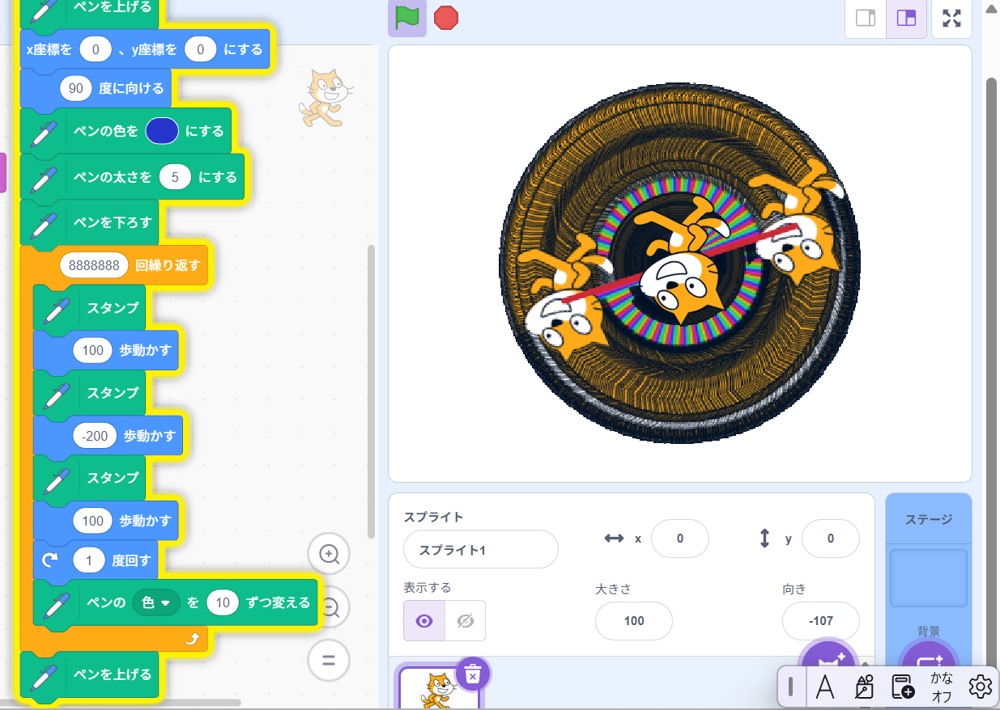
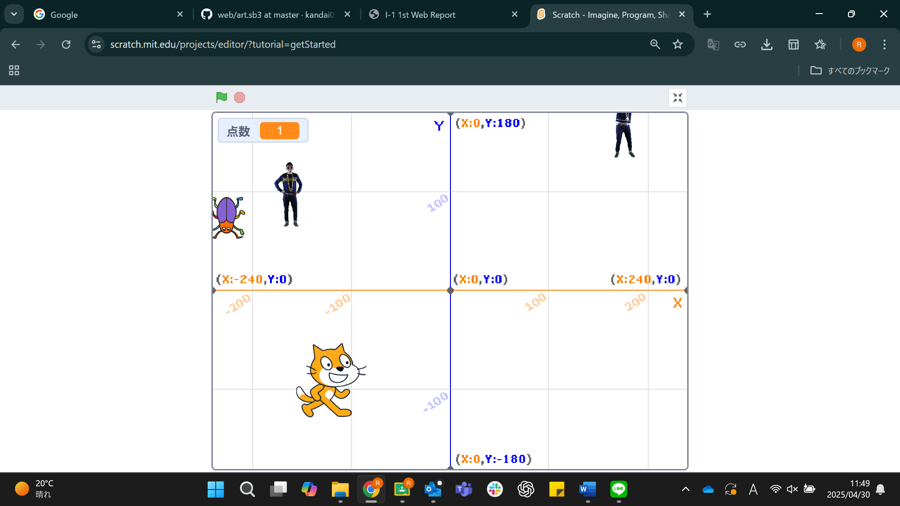

1週目のレポート ： 公大高専１年実習I-1
4b班35番 前野颯太朗
第1週目
1-1 サイエンスアート

1.内容
スクラッチのペン機能を使いネコの移動でペンアートを作成した。数値の変更により色の変化も制御できることを学習した。
数値や移動の工夫をして違った模様の作り方を考えた。
2.感想
自分で動きを想定できなかった。授業の通りに作ったプログラムがどういう動きをするのかの理解も大変だったので、
もっとしっかり予測を立てて工夫した模様を作りたかった。
1-2 ゲーム

1.内容
スプライトを新しく追加することで二つのものをプログラムし、ネコを動かしてリンゴをとり、点を稼ぐゲームを制作した。
コスチュームを変更するプログラムを作ることで、猫に動きを出した。
2.感想
途中でついていけなくなって時間が足りず、ありたいことは多くはできなかった。
しかし、乱数でランダムな動きを作ったり、条件分岐でゲーム性を出すなど、それぞれの機能の使い方などは学習できて、
技術が上がった実感はあるので楽しかった。
1-3 ホームページ作成
私のホームページ
1.内容
GitHubに自分を登録して、ホームページを作成した。
できたホームページのデータを書き換えて、趣味や好きなことなどの内容を自由に編集する方法を学習した。
2.感想
プログラミングは慣れていないし、GitHubを使うことも初めての体験だったので、手間取ってついていくのが大変だった。
その分、得られた知識は多かったように感じる。
各ページへのリンク
1週目のレポート
2週目のレポート
3週目のレポート
私のホームページ